Help: private chat
Block and unblock people
Blocking users with user names
When you receive a private message, you can block the sender by clicking the Block link above the text input box:
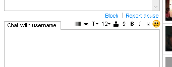
Please note: the Block button only appears when the other user has started the chat session. If you do not see the block link, make sure the user is not in your friend's list: the block link does not show for friends.
If you block someone who has a Chatango user name it also blocks their IP, so they will not be able to private message you from any user name. You can unblock them later by clicking on the Account link in the top right corner of your private messaging window, choose Block list, and finding this person in the list of people you have blocked.
Blocking anons
There are two ways to block "anon"s (people who message you through your Chatango mini box without signing up for Chatango):
- Block an individual anon by clicking the Block this person button when an anon contacts you
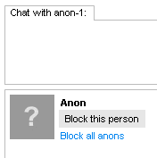
- Block all anon's: Account > Settings > and uncheck Allow anons to message me
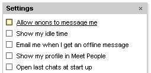
If you block all anons, all people will be asked to log in before they can private message you.
Reporting users
You can also report spam or inappropriate private messages to Chatango. Click on the Report Abuse link.
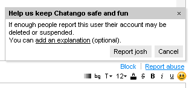
When enough people click on the Report Abuse button for a particular person, that person automatically gets restricted from private messaging others.
Providing an abuse report when a user messages you will give Chatango the necessary technical information in case we need to restrict that user. You can also provide a comment when you submit an abuse report.
Stay online when browser is closed
Message Catcher is currently only for Windows (Windows 7, Vista, XP, 2000, ME/98/95), it has no spyware of any kind, and it's only a 165 KB download. You can download it from here.
At some point, we will make a Mac version too.
To switch between being online and offline, right-click on your Message Catcher and choose Go Online or Go Offline from the menu.
Limit contact from strangers
To limit private messages from people you do not know, log in to Chatango and click Account > Settings.
- Show my profile in Meet People - this option controls whether your profile is shown in the Meet People tab.
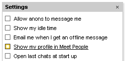
When it is not checked, your profile does not show up in the search results and it is not visible under Meet People.
- Allow anons to message me
When this option is unchecked only logged in Chatango users will be able to message you.
Report inappropriate profiles
In the meet people section of the private chat you can report a profile by rolling over the mini profile and clicking the report flag ( ):
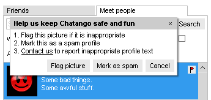
Manage private chat history
Your private chat history is stored locally on the device on which the messages were sent and received.
Currently your chat history is not saved on Chatango's servers.
To manage your private chat history click Account > Settings:
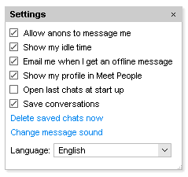
You can turn off the local saving of your conversations by unchecking Save Conversations. Your conversations may still be saved by the other person you are chatting with.
You can delete your local chat history by clicking the Delete saved chats now link.
You can see a list of your recent chats by clicking Account > Recent chats
Connection problems
If you are having trouble connecting to the private chat in Chatango, please make sure that you have the latest version of the Adobe Flash Player, which you can download here.
The Chatango private chat may not connect properly if you are connected to the internet via a proxy connection.
See our trouble shooting page for more things to try.
Change message sound
You can customize your private message sounds by clicking Account Settings Change message sound.
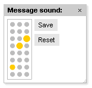
Click the grey dots to create your own message sound.
There is a volume control in the top left:
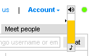
Turn off colored messages
You can turn of the colored backgrounds and text in all messages.
Click the black and white color bars icon () in the style bar:
You can turn off the colored backgrounds and text in your friends list by choosing Plain from the View dropdown at the top of your friends list:
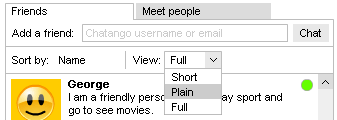
Add friends
Simply put their screen name into Add a friend box under the Friends tab.
This will add them to your friends list, and also open a conversation to them.
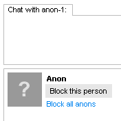
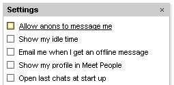
If you block all anons, all people will be asked to log in before they can private message you.
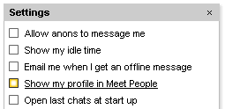
When it is not checked, your profile does not show up in the search results and it is not visible under Meet People.
When this option is unchecked only logged in Chatango users will be able to message you.